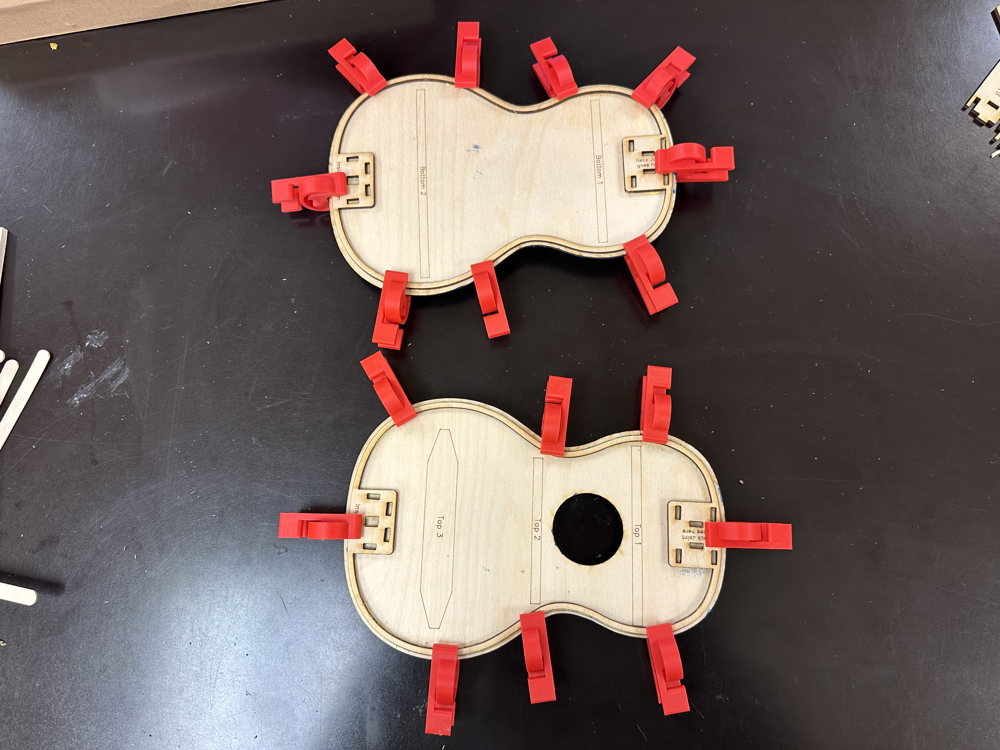
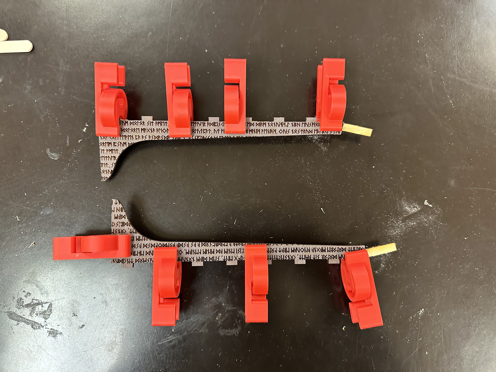
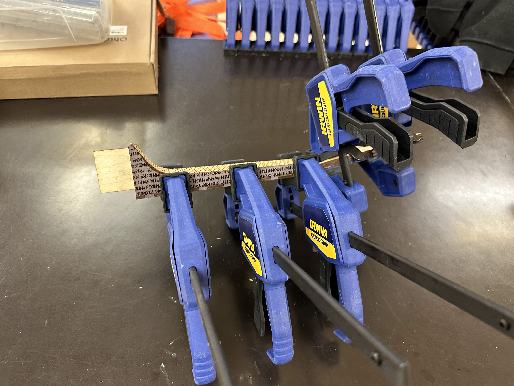
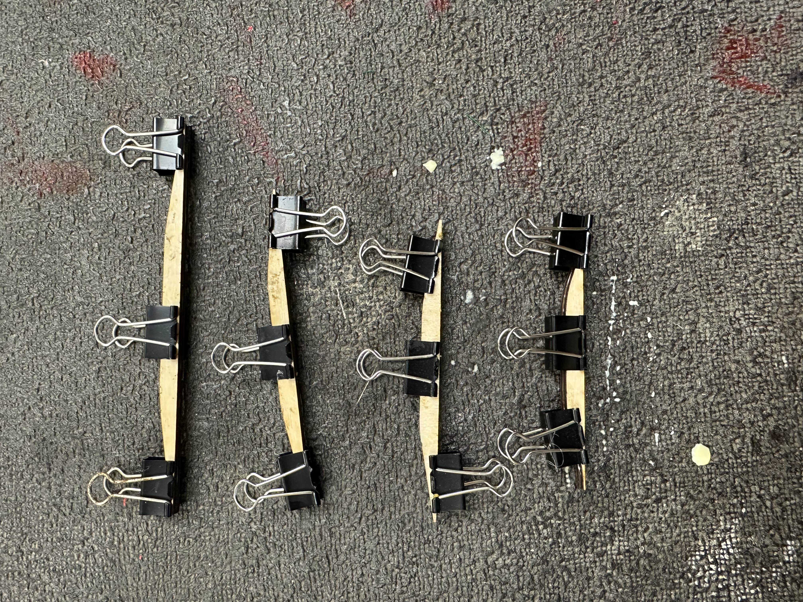
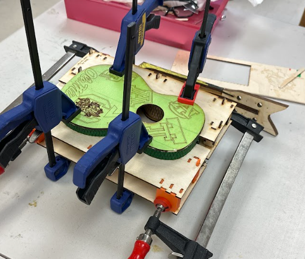

Middle School Research: The Science of Sound
Learning the science of sound through instrument design.
Middle School Research: The Science of Sound allows studnts to study sound through a hands on build of a ukulele. Students will design and create their own ukulele which will serve as a playable instrument but also a testing tool for how sound waves and chords are formed.
- Week 1: Ukulele Design on Graphite
- Week 2: Ukulele Design on Graphite
- Week 3: Ukulele Lasercutting / Introduction to Sound
- Week 4: Ukulele Construction
- Week 5: Ukulele Construction
- Week 6: Ukulele Construction
- Week 7: Deconstructing Sound through Chords
- Week 8: Sound Hypothesis
- Week 9: Sound Research
- Week 10: Sound Findings / Learn a Song
Project




